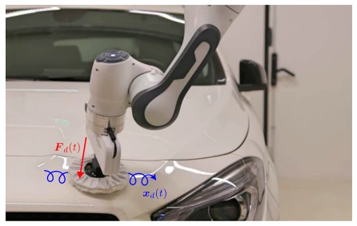
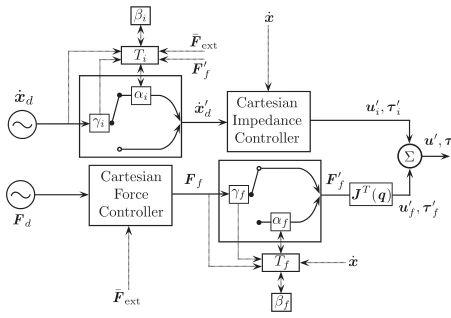
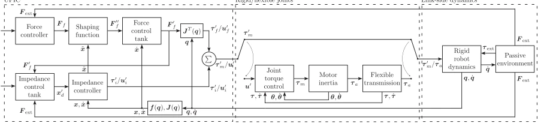
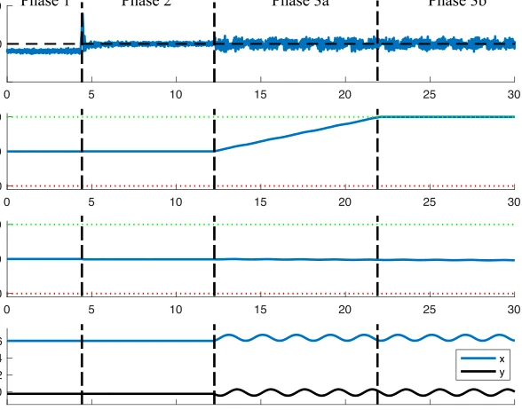
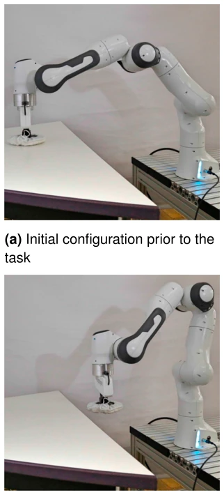
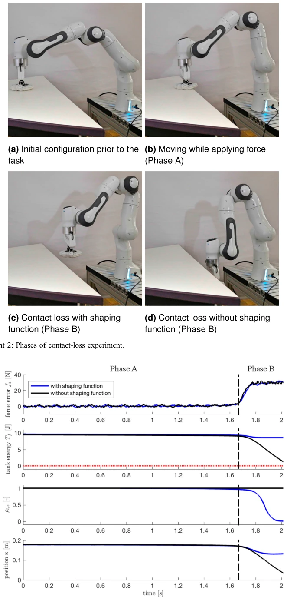
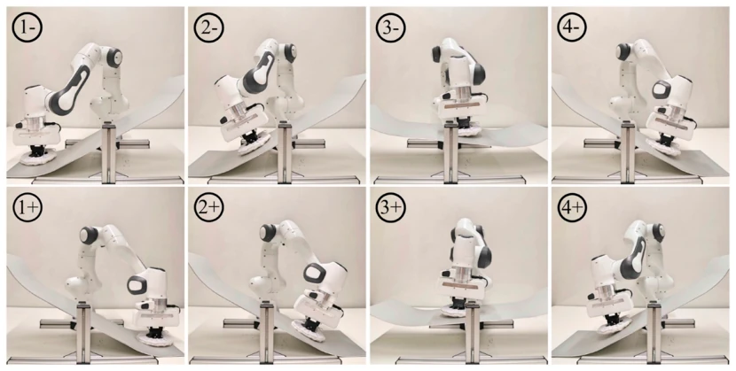
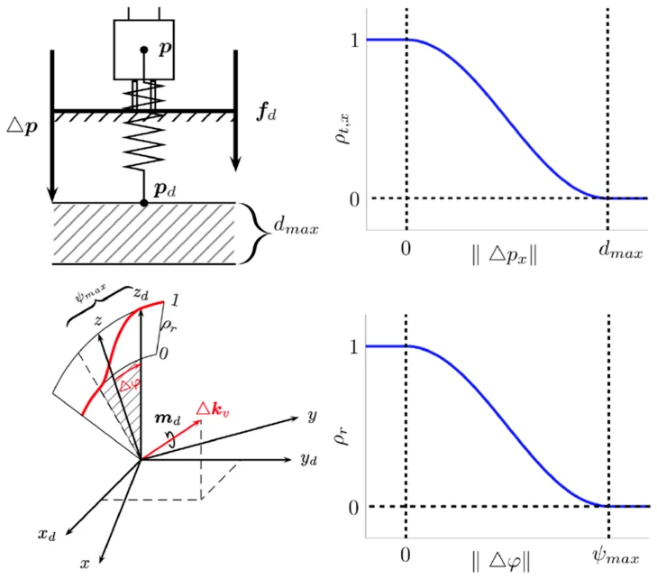
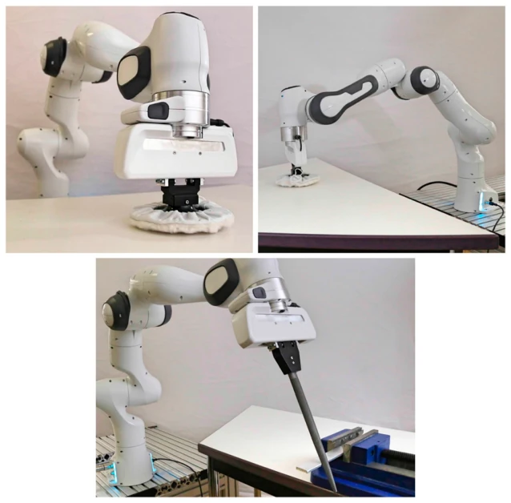
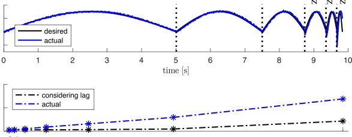

This paper couples force control and impedance control, employing a virtual Energy Tank to enforce system passivity. The advantage is finally avoiding the struggle with environmental model orthogonality required by matrix selection, and not fearing system failure upon contact loss. The disadvantage is that energy tank initialization still relies on guessing or experience; being too conservative may lead to task failure, while being too aggressive may trigger protection mechanisms. The theoretical derivation is quite rigorous, but the actual parameter tuning threshold is not low, as the energy tank is not infinitely refillable; once exhausted, the task must degrade. It is a significant benefit for industrial scenarios pursuing ultimate stability, but adaptability to dynamic environments still needs observation, and the extension to flexible joints increases complexity.
研究动机Motivation
传统混合力位控制依赖选择矩阵（Hogan, 1985），要求力与运动控制空间正交，但这需要精确环境模型（Paul, 1987），现实中很难满足。并行控制（Chiaverini et al., 1992）虽有优先级，但接触丢失时力控接管会导致机器人加速，极其危险。现有自适应方法依赖环境几何估计（Namvar and Aghili, 2005），摩擦等动态特性难以建模。本文旨在解决无完美模型下的力/运动同时控制稳定性问题，通过能量罐机制规避模型依赖。
Traditional hybrid force-position control relies on a selection matrix (Hogan, 1985), requiring orthogonality between force and motion control spaces, but this necessitates a precise environmental model (Paul, 1987), which is difficult to satisfy in reality. Parallel control (Chiaverini et al., 1992) has priorities, but when contact is lost and force control takes over, it causes robot acceleration, which is extremely dangerous. Existing adaptive methods rely on environmental geometry estimation (Namvar and Aghili, 2005), where dynamic characteristics such as friction are difficult to model. This paper aims to solve the stability problem of simultaneous force/motion control without a perfect model, avoiding model dependence through the energy tank mechanism.

Figure 1. Controlling the contact wrench at high performance over complex, discontinuous, and possibly compliant surfaces requires exact and robust force and compliant motion control.
The framework includes a force controller (PID) and an impedance controller, with the core being two virtual energy tanks connected in series. The force control tank monitors power flow, while the impedance tank monitors the desired power flow. If power flow leads to energy increase (non-passive), the energy tank absorbs or cuts the control signal. Stability of the closed-loop system for passive environments is proven via Lyapunov functions. Derivations are provided separately for rigid and flexible joint robots, and a smooth switching mechanism for the energy tank is designed to avoid abrupt changes. The control law is modified to merge outputs, where both force control and impedance outputs are modulated by energy tank coefficients. The energy tank state is dynamically updated to ensure the total system energy is bounded. Additionally, an energy initialization strategy based on task parameters is proposed to ensure sufficient energy in the tank before task execution.

Figure 2. Force and impedance tank architecture for UFIC.

Figure 4. Block diagram of the UFIC, robot system (rigid-body and flexible-joint), and passive environment.
Four experiments were conducted using a Franka Emika robot. These include polishing (force tracking), contact loss (stability), force tracking at different frequencies, and seesaw (impedance). Metrics include force error and energy tank levels. Results show that under model mismatch and contact loss scenarios, the system remains stable, with no dangerous motion observed. The influence of different energy initialization strategies was compared, proving the effectiveness of the basic initialization strategy. The experiments cover theoretical verification for rigid bodies and flexible joints; data indicates that this method outperforms traditional hybrid control in complex contact tasks.

Figure 6. Experiment 1: Force error, force, and impedance control tank energy and end-effector position for polishing task with different phases: Establishing contact (Phase 1), applying force (Phase 2), simultaneous polishing (Phase 3a), impedance control tank fill up (Phase 3b). Tank limits are indicated by green and red dotted lines.

Figure 7. Experiment 2: Phases of contact-loss experiment.

Figure 8. Experiment 2: Movement in x-direction (Phase A), movement beyond table edge (Phase B).

Figure 10. Experiment 4: Phases of the seesaw experiment. Positive and negative signs indicate velocity signs in y-direction. The seesaw can freely rotate at low friction around its lateral axis.
其他图片Other Figures

Figure 3. Left column: Impedance controlled robot with robustness region dmax for translation (upper) or ψmax for rotation (lower). Right column: Controller shaping function for the translational (upper) case and rotational case (lower).

Figure 5. Experimental setups with Franka Emika Robot.

Figure 9. Experiment 3: Force tracking performance at various frequencies, considering the time lag between the actual and desired values.